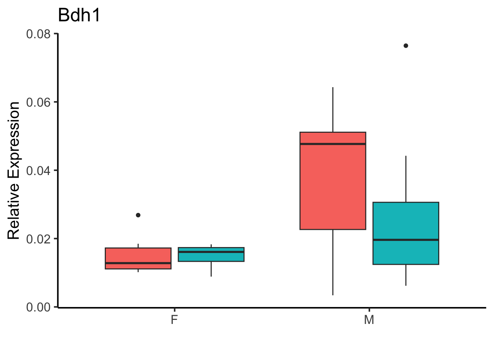
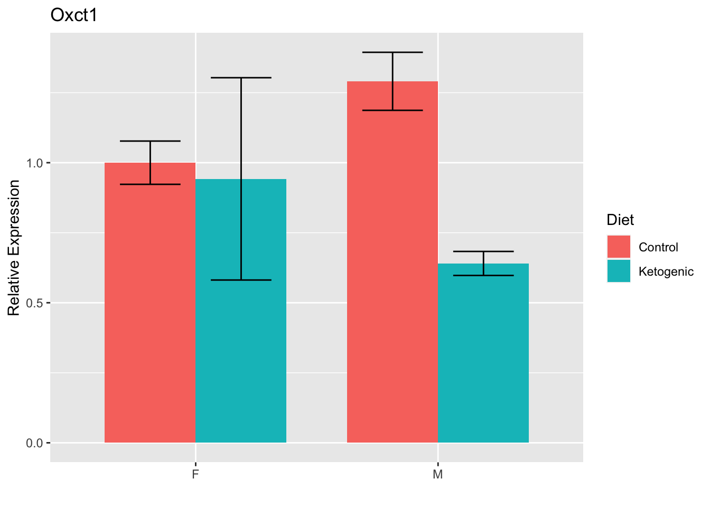
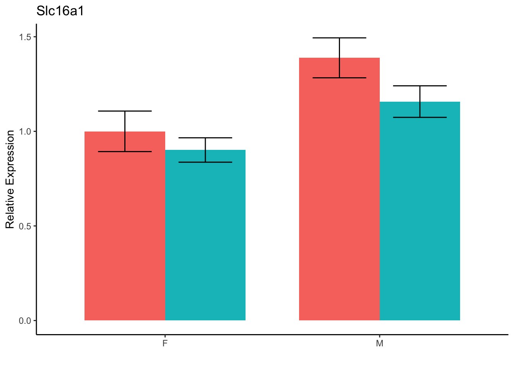

library(readr)
aj.mapping.file <- 'AJ Mapping Data.csv'
run.file <- 'Muscle qPCR Ketolysis - Well Results.csv'
mapping.data <- read_csv(aj.mapping.file) %>% mutate(Mouse=as.factor(Mouse))
run.data <- read_csv(run.file,na="Undetermined", skip=13) %>%
rename("Mouse"="Sample Name") %>%
filter(Mouse!="No Sample") %>%
rename("Target"="Target Name")
mapped.run.data <-
run.data %>%
full_join(mapping.data, by="Mouse") %>%
select(Mouse,Diet,Cohort,Sex,Target,Cq)Ketone Tolerance in CD/KD A/J Mice
This script was most recently run on Mon Jan 15 17:14:16 2024 and can be found in /Users/davebrid/Documents/GitHub/TissueSpecificTscKnockouts/Mouse Data/AJ Ketogenic Diet.
Purpose
Analyse mRNA expression from AJ Muscles
Experimental Details
qPCR for several ketolytic genes, done on three separate days
Raw Data
The mapping file is in AJ Mapping Data.csv and the two qPCR runs are in Muscle qPCR Ketolysis - Well Results.csv.
Analysis
Quality Check
Rearranged data so that replicates are in long format
qpcr.data.unclean <-
mapped.run.data %>%
select(Diet,Cohort,Sex,Mouse,Target,Cq) %>%
group_by(Diet,Cohort,Sex,Mouse,Target) %>%
summarize(Ct.mean = mean(Cq,na.rm=T),
Ct.range = max(Cq,na.rm=T)-min(Cq,na.rm=T))
# tech.outliers <- arrange(qpcr.data.unclean,-Ct.range)
# tech.outliers %>% kable(caption="Technical Outliers")
# run.data %>%
# filter(Target=="OXCT1",Sample=="4102") %>%
# select(Cq,Well,Plate)
run.data.clean <- mapped.run.data
qpcr.data <-
run.data.clean %>%
select(Diet,Cohort,Sex,Mouse,Target,Cq) %>%
group_by(Diet,Cohort,Sex,Mouse,Target) %>%
summarize(Ct.mean = mean(Cq,na.rm=T),
Ct.range = max(Cq,na.rm=T)-min(Cq,na.rm=T))Normalization
remove.mice <- c()
analysed.data <-
qpcr.data %>%
ungroup %>%
filter(!(Mouse %in% remove.mice)) %>%
group_by(Diet,Cohort,Sex,Mouse) %>%
mutate(Ct.norm = Ct.mean-Ct.mean[Target=="Rplp0"]) %>%
group_by(Diet,Sex,Target,Mouse) %>%
mutate(Ct.quant = 2^-Ct.norm)
summarized.data <-
analysed.data %>%
group_by(Diet,Sex,Target) %>%
summarise(Mean.exp = mean(Ct.quant),
Mean.se = se(Ct.quant)) %>%
group_by(Target) %>%
mutate(Mean.rel = Mean.exp/Mean.exp[Diet=="Control"&Sex=="F"],
Mean.rel.se = Mean.se/Mean.exp[Diet=="Control"&Sex=="F"]) Quality Check
tech.outliers <- arrange(qpcr.data,-Ct.range)
tech.outliers %>%
filter(Ct.range>2,Ct.mean<30) %>%
kable(caption="Technical Outliers")| Diet | Cohort | Sex | Mouse | Target | Ct.mean | Ct.range |
|---|---|---|---|---|---|---|
| Control | 1 | F | 4108 | Bdh1 | 28.5 | 4.67 |
| Ketogenic | 1 | F | 4104 | Rplp0 | 23.8 | 4.47 |
| Ketogenic | 2 | M | 1753 | Rplp0 | 26.0 | 4.12 |
| Control | 1 | F | 4108 | Rplp0 | 23.8 | 4.09 |
| Ketogenic | 1 | M | 4098 | Rplp0 | 20.5 | 3.95 |
| Ketogenic | 1 | M | 4093 | Rplp0 | 25.1 | 3.80 |
| Ketogenic | 1 | M | 4098 | Bdh1 | 24.6 | 3.43 |
| Control | 2 | M | 1750 | Bdh1 | 27.3 | 2.80 |
| Ketogenic | 2 | M | 1746 | Rplp0 | 23.4 | 2.77 |
| Ketogenic | 2 | M | 1746 | Bdh1 | 26.5 | 2.13 |
#biological outliers
analysed.data %>%
group_by(Diet,Sex,Target) %>%
mutate(Group.mean=mean(Ct.quant),
Diff.from.mean = Ct.quant-mean(Ct.quant)) %>%
arrange(-abs(Diff.from.mean)) %>%
head %>%
kable| Diet | Cohort | Sex | Mouse | Target | Ct.mean | Ct.range | Ct.norm | Ct.quant | Group.mean | Diff.from.mean |
|---|---|---|---|---|---|---|---|---|---|---|
| Ketogenic | 1 | F | 4104 | Oxct1 | 25.7 | 0.041 | 1.92 | 0.265 | 0.080 | 0.185 |
| Ketogenic | 1 | F | 4104 | Slc16a1 | 25.5 | 0.222 | 1.74 | 0.299 | 0.133 | 0.166 |
| Ketogenic | 2 | M | 1746 | Bdh1 | 26.5 | 2.132 | 3.10 | 0.116 | 0.033 | 0.084 |
| Control | 1 | M | 4095 | Slc16a1 | 26.5 | 0.527 | 3.59 | 0.083 | 0.162 | -0.079 |
| Ketogenic | 2 | M | 1748 | Slc16a1 | 25.7 | 0.439 | 2.24 | 0.212 | 0.137 | 0.075 |
| Ketogenic | 1 | F | 4103 | Slc16a1 | 26.7 | 0.113 | 3.83 | 0.070 | 0.133 | -0.063 |
BDH1
library(ggplot2)
ggplot(summarized.data %>% filter(Target=="Bdh1"),
aes(y=Mean.rel,
ymin=Mean.rel-Mean.rel.se,
ymax=Mean.rel+Mean.rel.se,
x=Sex,
fill=Diet)) +
geom_bar(stat='identity',position="dodge",width=0.75) +
geom_errorbar(width = .5, position = position_dodge(0.75)) +
labs(title="Bdh1",
y="Relative Expression",
x="")
OXCT1
ggplot(summarized.data %>% filter(Target=="Oxct1"),
aes(y=Mean.rel,
ymin=Mean.rel-Mean.rel.se,
ymax=Mean.rel+Mean.rel.se,
x=Sex,
fill=Diet)) +
geom_bar(stat='identity',position="dodge",width=0.75) +
geom_errorbar(width = .5, position = position_dodge(0.75)) +
labs(title="Oxct1",
y="Relative Expression",
x="") -> oxct.plot
oxct.plot
SLC16A1
ggplot(summarized.data %>% filter(Target=="Slc16a1"),
aes(y=Mean.rel,
ymin=Mean.rel-Mean.rel.se,
ymax=Mean.rel+Mean.rel.se,
x=Sex,
fill=Diet)) +
geom_bar(stat='identity',position="dodge",width=0.75) +
geom_errorbar(width = .5, position = position_dodge(0.75)) +
labs(title="Slc16a1",
y="Relative Expression",
x="") -> slc16a1.plot
slc16a1.plot
Statistics
Sample Size
analysed.data %>%
ungroup() %>%
group_by(Sex,Diet,Target) %>%
count %>%
pivot_wider(names_from="Target",values_from = "n") %>%
kable(caption="Group sizes for analyzed data")| Sex | Diet | Bdh1 | Oxct1 | Rplp0 | Slc16a1 |
|---|---|---|---|---|---|
| F | Control | 6 | 6 | 6 | 6 |
| F | Ketogenic | 7 | 7 | 7 | 7 |
| M | Control | 11 | 11 | 11 | 11 |
| M | Ketogenic | 17 | 13 | 17 | 13 |
Multivariate Analysis
Did 2x2 ANOVA analyses
library(broom)
interaction.results <- data.frame()
for (gene in c("Bdh1","Oxct1","Slc16a1")) {
temp.result <- lm(Ct.quant ~ Diet*Sex,data=filter(analysed.data, Target==gene)) %>%
tidy %>%
mutate(Gene=gene) %>%
filter(term=="DietKetogenic:SexM")
interaction.results <- bind_rows(interaction.results,temp.result)
}
kable(interaction.results,caption="Test for Diet-Sex Interactions")| term | estimate | std.error | statistic | p.value | Gene |
|---|---|---|---|---|---|
| DietKetogenic:SexM | 0.004 | 0.015 | 0.291 | 0.773 | Bdh1 |
| DietKetogenic:SexM | -0.051 | 0.027 | -1.846 | 0.074 | Oxct1 |
| DietKetogenic:SexM | -0.035 | 0.032 | -1.109 | 0.276 | Slc16a1 |
main.results <- data.frame()
for (gene in c("Bdh1","Oxct1","Slc16a1")) {
temp.result <- lm(Ct.quant ~ Diet+Sex,data=filter(analysed.data, Target==gene)) %>%
tidy %>%
mutate(Gene=gene)
main.results <- bind_rows(main.results,temp.result)
}
main.results.formatted <-
main.results %>%
relocate(Gene,.before=term) %>%
select(-statistic) %>%
group_by(Gene) %>%
mutate(Pct.Change = estimate/estimate[term=="(Intercept)"]*100) %>%
mutate(Sig=case_when(p.value<0.05&term!="(Intercept)"~"*",
.default=""))
kable(main.results.formatted,caption="Test for Diet and Sex Effects on Expression")| Gene | term | estimate | std.error | p.value | Pct.Change | Sig |
|---|---|---|---|---|---|---|
| Bdh1 | (Intercept) | 0.015 | 0.007 | 0.035 | 100.00 | |
| Bdh1 | DietKetogenic | 0.001 | 0.007 | 0.842 | 8.93 | |
| Bdh1 | SexM | 0.015 | 0.007 | 0.041 | 100.05 | * |
| Oxct1 | (Intercept) | 0.103 | 0.014 | 0.000 | 100.00 | |
| Oxct1 | DietKetogenic | -0.038 | 0.014 | 0.009 | -36.62 | * |
| Oxct1 | SexM | -0.002 | 0.014 | 0.861 | -2.42 | |
| Slc16a1 | (Intercept) | 0.135 | 0.015 | 0.000 | 100.00 | |
| Slc16a1 | DietKetogenic | -0.012 | 0.015 | 0.417 | -9.21 | |
| Slc16a1 | SexM | 0.020 | 0.016 | 0.222 | 14.55 |
library(car)
analysed.data %>%
group_by(Target,Sex) %>%
filter(Target!="Rplp0") %>%
summarize(Pct.Decrease = (mean(Ct.quant[Diet=="Control"],na.rm=T)-mean(Ct.quant[Diet=="Ketogenic"],na.rm=T))/mean(Ct.quant[Diet=="Control"],na.rm=T)*100,
Shapiro=min(shapiro.test(Ct.quant[Diet=="Ketogenic"])$p.value,
shapiro.test(Ct.quant[Diet=="Control"])$p.value),
Levene=leveneTest(Ct.quant~Diet)$"Pr(>F)"[1],
Mann.Whitney=wilcox.test(Ct.quant~Diet)$p.value,
Welch=t.test(Ct.quant~Diet,var.equal = F)$p.value,
Student=t.test(Ct.quant~Diet,var.equal = T)$p.value) %>%
mutate(Test=case_when(Shapiro<0.05~"Mann Whitney",
Levene<0.05~"Welch's",
.default="Student's")) %>%
kable(caption="Pairwise tests for effects of diet")| Target | Sex | Pct.Decrease | Shapiro | Levene | Mann.Whitney | Welch | Student | Test |
|---|---|---|---|---|---|---|---|---|
| Bdh1 | F | 9.04 | 0.002 | 0.675 | 0.836 | 0.819 | 0.817 | Mann Whitney |
| Bdh1 | M | -9.29 | 0.001 | 0.413 | 0.711 | 0.750 | 0.776 | Mann Whitney |
| Oxct1 | F | 5.77 | 0.000 | 0.449 | 0.035 | 0.881 | 0.888 | Mann Whitney |
| Oxct1 | M | 50.38 | 0.454 | 0.030 | 0.000 | 0.000 | 0.000 | Welch’s |
| Slc16a1 | F | -8.37 | 0.003 | 0.652 | 0.628 | 0.754 | 0.765 | Mann Whitney |
| Slc16a1 | M | 15.34 | 0.226 | 0.596 | 0.119 | 0.121 | 0.111 | Student’s |
analysed.data %>%
filter(Target=="Slc16a1") %>%
filter(Sex=="F") %>%
kable(caption="Visually inspected outliers")| Diet | Cohort | Sex | Mouse | Target | Ct.mean | Ct.range | Ct.norm | Ct.quant |
|---|---|---|---|---|---|---|---|---|
| Control | 1 | F | 4106 | Slc16a1 | 27.2 | 0.461 | 3.24 | 0.106 |
| Control | 1 | F | 4107 | Slc16a1 | 24.1 | 0.045 | 2.58 | 0.168 |
| Control | 1 | F | 4108 | Slc16a1 | 26.5 | 0.251 | 2.71 | 0.153 |
| Control | 1 | F | 4109 | Slc16a1 | 22.1 | 0.075 | 3.15 | 0.112 |
| Control | 1 | F | 4115 | Slc16a1 | 25.0 | 0.287 | 2.97 | 0.128 |
| Control | 1 | F | 4116 | Slc16a1 | 23.9 | 0.118 | 3.79 | 0.072 |
| Ketogenic | 1 | F | 4103 | Slc16a1 | 26.7 | 0.113 | 3.83 | 0.070 |
| Ketogenic | 1 | F | 4104 | Slc16a1 | 25.5 | 0.222 | 1.74 | 0.299 |
| Ketogenic | 1 | F | 4105 | Slc16a1 | 26.2 | 0.336 | 3.27 | 0.104 |
| Ketogenic | 1 | F | 4110 | Slc16a1 | 26.0 | 0.178 | 3.36 | 0.098 |
| Ketogenic | 1 | F | 4111 | Slc16a1 | 24.1 | 0.153 | 2.98 | 0.127 |
| Ketogenic | 1 | F | 4112 | Slc16a1 | 25.9 | 0.119 | 3.08 | 0.118 |
| Ketogenic | 1 | F | 4113 | Slc16a1 | 25.1 | 0.077 | 3.07 | 0.119 |
#Slc16a1 :: 4108 seems variable, not due to technical variationSession Information
sessionInfo()R version 4.2.2 (2022-10-31)
Platform: x86_64-apple-darwin17.0 (64-bit)
Running under: macOS Big Sur ... 10.16
Matrix products: default
BLAS: /Library/Frameworks/R.framework/Versions/4.2/Resources/lib/libRblas.0.dylib
LAPACK: /Library/Frameworks/R.framework/Versions/4.2/Resources/lib/libRlapack.dylib
locale:
[1] en_US.UTF-8/en_US.UTF-8/en_US.UTF-8/C/en_US.UTF-8/en_US.UTF-8
attached base packages:
[1] stats graphics grDevices utils datasets methods base
other attached packages:
[1] car_3.1-2 carData_3.0-5 broom_1.0.5 ggplot2_3.4.4 readr_2.1.4
[6] dplyr_1.1.3 tidyr_1.3.0 knitr_1.44
loaded via a namespace (and not attached):
[1] pillar_1.9.0 compiler_4.2.2 tools_4.2.2 digest_0.6.33
[5] bit_4.0.5 gtable_0.3.4 jsonlite_1.8.7 evaluate_0.22
[9] lifecycle_1.0.3 tibble_3.2.1 pkgconfig_2.0.3 rlang_1.1.1
[13] cli_3.6.1 rstudioapi_0.15.0 yaml_2.3.7 parallel_4.2.2
[17] xfun_0.40 fastmap_1.1.1 withr_2.5.2 generics_0.1.3
[21] vctrs_0.6.4 htmlwidgets_1.6.2 hms_1.1.3 bit64_4.0.5
[25] grid_4.2.2 tidyselect_1.2.0 glue_1.6.2 R6_2.5.1
[29] fansi_1.0.5 vroom_1.6.4 rmarkdown_2.25 farver_2.1.1
[33] purrr_1.0.2 tzdb_0.4.0 magrittr_2.0.3 backports_1.4.1
[37] scales_1.2.1 htmltools_0.5.6.1 abind_1.4-5 colorspace_2.1-0
[41] labeling_0.4.3 utf8_1.2.4 munsell_0.5.0 crayon_1.5.2